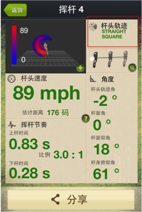
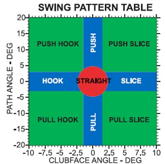

trueMotion™
mySwing™

NTM-AHRS-800
Video:
trueMotion™ tutorial video


mySwing™ FAQ
Q: 杆头速度应该是多少？
A: 在保持挥杆动作的稳定性和准确的方向的前提下，杆头速度越快越好。越快的杆头速度，将会产生更远的飞行距离。
下图为一号木典型的杆头速度和飞行距离的关系图

Q: 飞行距离应该是多少？
A: 下表为典型的不同型号的杆对应的典型飞行距离
Q: 合理的挥杆节奏应该是多少？
A: 对大部分入门的球手，合理的上下挥杆节奏应该在3：1左右，亦即上挥杆和下挥杆的时间的比例为3：1。如果能稳定得保持3：1的节奏，下挥杆的时间越短越好。越短的下挥杆时间，会导致更更快的杆头速度。
注：很多好手的挥杆节奏能达到4：1甚至5：1，而且下挥杆时间能控制在0.25秒以内。
Q: 什么是杆面角？什么是杆头轨迹角？
A: 杆头轨迹角：
杆头轨迹线与目标击球方向之间的夹角。
杆面角：
击球时杆面朝向与杆头轨迹线之间的夹角。
符号定义
+的杆面角为open,－ 的杆面角为 close
+的杆头轨迹角为inside-out, － 的杆头轨迹角为outside-in
杆面角和杆头轨迹角对球路的影响：
杆面角的开与合（open or close）决定了球路为外曲（slice）还是内曲（hook）。
杆头轨迹角的正与负（inside-out or outside-in）决定了初始杆路是偏右 （push）还是偏左（pull）。
杆面角度和杆头轨迹角接近0度，则能打出很直的球路。
不同的杆面角和杆头轨迹角组合有可能制造出以下图中9种不同的球路。
Q:什么是杆身俯仰角（Lie )？什么是杆面仰角（Loft）？
A: 杆身俯仰角：
击球时杆身与地面之间的夹角。杆身俯仰角对击球效果影响也很大，尤其是对中短铁杆。通常人们会说有三种杆身俯仰角：standard, flat, 和upright。 比如4号铁杆，假如其标准杆身俯仰角为61度，大于61度就为upright, 而小于61度即为flat。
杆面仰角：
击球时杆面朝向与地面之间的夹角。在击球的时候，杆面仰角越大，越容易把球打高。通常而言，一套杆里，越长的杆，其标准的杆面仰角会越低。
典型铁杆和木杆的杆面仰角和杆身俯仰角数值
Q: 挥杆宝模块LED不同的闪烁方式代表什么？
A: 传感器模块LED灯有四种不同状态表征传感器不同工作模式：
* 传感器开机后，LED灯处于“慢闪”状态，表示此时模块处于待机状态，可与iOS设备连接;
* 在iOS设备的蓝牙设置界面，搜索并连接mySwing模块
* 连接成功后，模块LED灯将进入“呼吸”模式表示蓝牙连接正常
* 启动mySwing应用，开始一个新的挥杆小节，模块LED灯将进入“快闪”模式，此时即可挥杆;
* 当传感器模块电量较低时，模块LED灯将呈“红色”模式，此时应在30分钟内将模块充电，完全充满电约需30分钟。一个充满电的传感器模块，通常能连续工作2.5小时
Q: 如何开、关挥杆宝模块
A: 模块上只有一个按钮，在模块侧面的中部 轻轻按一下按钮即开机 长按按钮5秒关机
Q: 如何更换绑带？
A: 包装内有一条备用粘扣绑带，当原装绑带出现明显的老化迹象时，可用备用绑带替换。
绑带通过一根金属棒跟模块通过卡扣连接。
需要替换时，沿左图方向拔出，替换绑带后，在按左图方向挤入即可。详见辅助视频。
参考绑带更换视频
http://v.youku.com/v_show/id_XNDk2MDc5Mzcy.html
Q:充电需要多久，充一次电可以使用多久？
A: 当传感器模块电量较低时，模块LED灯将呈“红色”模式，此时应在30分钟内将模块充电，完全充满电约需30分钟。一个充满电的传感器模块，通常能连续工作2.5小时。
Q: 如何删除无用数据？
A:在数据列表界面，用手指横向滑动，即会出现“删除”按钮，按按钮确认删除。
Q: 空挥时会捕捉到挥杆动作吗？
A: 如果挥杆过程没有击球，挥杆宝依然会捕捉挥杆动作，但是只会给出最大的杆头速度，以及挥杆节奏，不会有其它角度数据。空挥的数据也不会存入统计数据中，不影响总体统计结果。
Q: 理想的挥杆应该是什么样的？
A: 对于大部分球手而言，将球打得远、直、稳是基本的挥杆要求。
杆头速度越快越好，但是前提是有稳定的节奏
要打直，角度控制要好
杆头轨迹角0度为最佳，一般球手能控制在正负4度以内也已经不错
杆面角0度为最佳，一般球手能控制在正负2度以内也已经不错
杆面仰角和杆身俯仰角数值应该该与球杆的基本一致。
Q: 为什么有时候会有鼓掌声？
A: 鼓掌声代表球打得很直，标准为杆头轨迹角和杆面角都很小
Q: 挥杆前如果杆头没有摆正会有什么影响？
A: 挥杆宝是假设在挥杆前，杆头的指向作为参考的目标方向，后续的角度测量都是相对初始的杆头指向而言的。如果在一开始杆头没有摆正的，即使击球的时候打的很直，挥杆宝也会测量出一个角度。所以，在使用挥杆宝的时候，务必将杆头在开始的时候摆正。
Q: 我怎么才知道应用程序有更新？
A: 在iOS系统中，如果应用程序有更新，系统本身会有提示。同时，当你打开mySwing的应用程序的时候，程序会自动检测该版本是否是最新版本，如果不是，会提醒您是否需要更新。
Q: 挥杆宝相对于其它竞争对手优势在哪里？
A: 精准度高，我们的技术源于全球领先的高速无线全身动作捕捉系统，是目前最精准的便携式挥杆分析仪
响应速度快，使用了嵌入式MEMS处理器，挥杆后无需任何等待和干预即可获取数据
质量轻，安装方便，尤其是安装夹具设计精巧，牢固地将传感器固定于球杆上
应用程序界面友好，使用简单，挥杆数据一目了然
目前市面的便携式挥杆分析仪中，唯一含有内置的弹道飞行分析模拟程序
Q: 保修期是多久？如何保修？
A: 至购买日起1年为保修期。
保修期内如果发生质量问题，厂家直接替换一个新产品。
Q: 挥杆宝的技术来至哪里？挥杆宝是哪里的产品？
A: 挥杆宝的核心技术在美国开发。
挥杆宝的产品制造在中国。
我们的技术是源于世界领先的高速无线动作捕捉技术
Q: 哪里可以设置左手?
A: 在主界面的“用户管理”进入帐号管理和创建页面 在创建帐号的时候，可以选择是左手还是右手
Q: 怎么观看挥杆平面？
A: 通过3D 模型观察挥杆平面，可以更直观的观察到自己的挥杆动作。以下是一些例子
Q: 弹道图里的距离包含滚动距离么？
A: 弹道图中的距离为飞行距离，不包含滚动距离。
Q: 怎么下载挥杆宝应用程序？
A:


Q: 挥杆宝支持安卓ANDROID手机么？
A: Noitom公司正在开发针对Android系统的应用程序。预计在2013年3月初面世。 传感器模块的硬件将会同时支持iOS 和 Android系统。也就是说，已经购买了挥杆宝模块的客户，待Android版本的应用程序面世后，用手头的模块即可配合使用Android的应用程序，无需再次购买。
Q: 挥杆宝支持推杆练习么？挥杆宝支持劈杆练习么？
A: 挥杆宝将会支持推杆练习，预计2013年4月初正式发布。挥杆宝暂时不支持劈杆练习。
Q: 挥杆宝的数据可以导出么？
A: 挥杆宝数据都存储在手机本地，暂时不支持导出。但是可以通过微博等社交网络发布挥杆界面的截图。
Q: 我能不能将挥杆宝应用程序装在不同的手机上？
A: 挥杆宝应用程序可以下载到任意多台的手机，但是在任何时刻，挥杆宝模块只能对应一个手机，数据也是保持到该手机的本地。 挥杆宝应用程序为免费程序，即使没有挥杆宝模块，也可以下载。
Q: What’s the relationship between club head speed and carry distance
A: Typical relationship between club head speed and carry distance for driver is shown below
Q: What is upswing tempo?
A: Upswing is the movement of the golf club rearward, away from the ball, and then up and around the body, until the golfer reaches the point where he transitions the movement of the club forward again. Upswing tempo is the duration of upswing (in second(s)).
Q: What is downswing tempo?
A: Down swing is the term for that part of the golf swing that occurs between the end of the upswing and the impact with the golf ball. Downswing tempo is the duration of downswing(in second(s))
Q: What’s good swing tempo?
A: Good golfers have steady upswing and downswing tempos. An upswing and downswing tempo ratio of 3:1 is considered good for most amateur golfers.If a user maintains a 3:1 ratio, thefaster thedownswing tempo the better ther swing.
Q: What’s club head path angle?
A: The angle between the club head's direction of movement and the target direction.
Q: What’s club face angle?
A: The angle between the clubface direction and the club head path.
Q: How do clubface angle and club head path angle affect the ball flight?
A: The combination of club face angle and club head path angle can have significant effects on the ball flight pattern. There are typically 9 types of ball flights, as shown in the picture below.

Ideally, to hit a straight ball, you need to swing at 0 club face angle and 0 club path angle
Positive club face angle will create “slice”.
Negative clubface angle will create “hook”.
Positive path angle will create “in-side-out” or “push”
Negative path angle will create “in-side-out” or “pull”
For instance, if you swing at a positive club face angle and a negative club path angle, the ball flight pattern will be “pull-slice”.
Please refer to the following diagram to quickly check how different combinations of clubface angle and club path angle affect the ball flight patterns.
Q: What is loft angle
A: Loft angle is the angle between the club face angle and the ground, as shown in the following picture:

The higher the club loft measurement, the higher the resultant ball flight. Loft is the primary reason the ball becomes airborne. Typically through a set of clubs, the longer the club, the lower the loft.
Q: What is lie angle
A: Lie angle is the angle between the centerline of the shaft and the ground-line with the club in a normal playing position, as shown in the following picture:
The lie plays a key role in shot direction, particularly in relation to mid and short irons. The lie of an iron is said to be standard, flat or upright. For example a typical #5 iron may have a standard lie angle of 60 degrees; a more upright iron would have a lie angle greater than 60 degrees, and a flatter iron would have a lie angle less than 60 degrees.
Q: What is the typical lie and loft angles of a set of clubs
A: Please refer to the following tables.